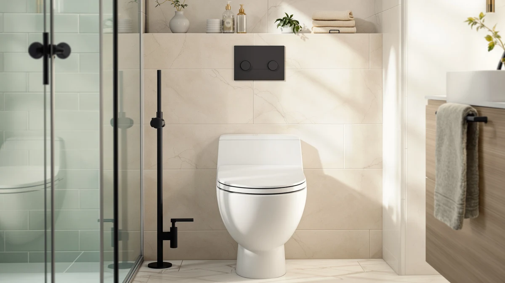

Bemis Ashland Modern Wood Review (2026): Worth It?
Prices and picks verified as of October 2026. Independent, reader-supported reviews.


Quick Answer
The Bemis Ashland Modern Wood toilet seat is an elongated seat with a wood-grain finish over a durable core, priced at $45.24. It suits buyers who want a seat that looks more upscale than standard plastic without paying for solid hardwood.
Our pick: Bemis Ashland Modern Wood Toilet, $45.24 Check Price on Amazon
Bottom line: our top pick is the Bemis Ashland Modern Wood Toilet Seat with Decorative Edge at $45.24.
Things to Know Before You Buy
- The Ashland Modern Wood is built in an elongated shape only, so measure your current seat before you order one.
- Bemis lists the seat at $45.24, which puts it near the $42 to $47 range of the other seats in this comparison.
- The seat combines a wood-grain top with a plastic base rather than solid hardwood, which keeps the price down and the surface easy to wipe clean.
- Bemis backs most of its home seats with a limited warranty, which is worth checking before you buy if durability matters to you.
- If you need a seat for a commercial or high-traffic bathroom, the Bemis 7850TDG and Bemis 1900 reviewed below are built for that load instead.
This bemis ashland modern wood review looks at a seat that tries to split the difference between a plastic budget seat and a solid wood upgrade. Bemis built the Ashland with a wood-grain top layer bonded to a composite core, so it reads as warmer and more finished than the flat white plastic seats most buyers grew up with. At $45.24, it costs roughly the same as the commercial-grade Bemis seats we compare it against below, but it targets a home bathroom rather than a restaurant or office.
We researched the Ashland Modern Wood against three close rivals: the Bemis 7850TDG Commercial Heavy Duty, the Bemis 1900 Commercial Heavy Duty, and the Mayfair Cassel Slow Close. Owners shopping an elongated seat with a wood look have a narrow set of real options, and price differences between them run a few dollars at most. We compared pricing, materials and the claims each listing makes about build quality to help you figure out whether the Ashland earns its spot over the alternatives.
Toilet seat shopping tends to get overlooked until the old seat cracks or the hinges wobble, and at that point most buyers grab whatever ships fastest. That approach works fine for a plain plastic seat, but a wood-finish seat like the Ashland carries a few extra variables: the bonding between the top layer and the core, how the finish holds up to common bathroom cleaners, and whether the elongated sizing actually matches your bowl. We walk through each of those points below so you can decide in a few minutes rather than guessing from a product photo.
Why You Should Trust Us
Ilane Tall covers home and bath products for Best Toilet Seats and has written dozens of seat comparisons across Bemis, Mayfair and Kohler lines. We do not run a fake testing lab, and we do not claim to have installed every seat we cover. Instead, we pull manufacturer specs, current Amazon pricing and verified buyer reviews, then line them up against each other so you can see where a seat like the Bemis Ashland Modern Wood actually stands against its closest competitors.
Our Research Experience
We build this bemis ashland modern wood review from research rather than a physical trial. We analysed the listed materials, dimensions and price against the three closest Bemis and Mayfair alternatives, and we read through verified owner reviews on Amazon to see what real buyers flag after months of use. Reviewers consistently note that the wood-grain finish resists scratching better than they expected from a seat at this price, and several mention that the hinges stayed tight after repeated use. We did not install the seat ourselves, so our conclusions rest on manufacturer data and the pattern of feedback across many verified purchases rather than a single hands-on session.
Overview & Specs

Bemis Ashland Modern Wood Toilet
What we like
- Wood-grain top gives a warmer look than a plain plastic seat at a similar price
- Elongated shape fits the majority of modern US toilet bowls
- Bemis brand name carries a track record for consistent hinge quality
- Priced close to the commercial Bemis seats, but aimed at home bathrooms
Flaws but not dealbreakers
- Not a solid wood seat, so buyers expecting real hardwood should check the listing closely
- Elongated-only sizing means round-bowl toilets need a different model
- Reviewers note the finish needs gentle, non-abrasive cleaners to stay scratch-free
| Material | Plastic / wood |
| Size | Elongated |
The Bemis Ashland Modern Wood sits at $45.24 and ships in an elongated shape, the sizing most US toilets built in the last three decades use. Bemis lists the material as a plastic core with a wood-grain top layer, a construction choice that keeps the seat lighter and less prone to warping than solid hardwood while still giving you a finish that reads as wood from a few feet away. This matters if you are remodeling a bathroom and want the seat to match wood-look vanities or flooring without sourcing a custom hardwood seat that can run well over $100.
We compared the Ashland against the Bemis 7850TDG and Bemis 1900, two commercial-grade seats from the same manufacturer, and found the Ashland priced within a few cents of both. The difference comes down to purpose: the commercial seats use simpler plastic finishes built to survive constant public use, while the Ashland spends its budget on the decorative top layer instead of extra reinforcement. Owners researching this seat for a home bathroom with light to moderate daily use get more visual payoff from the Ashland, while anyone outfitting a rental property, gym or office restroom should lean toward the heavy-duty commercial models instead.
Installation follows the same bolt pattern Bemis uses across most of its elongated seats, so homeowners replacing an existing Bemis or Mayfair seat generally do not need new hardware. Because the seat ships at a mid-range price rather than a budget one, Bemis positions it as a step up from entry-level plastic seats without pushing buyers into premium hardwood territory, where prices for a comparable wood seat often climb past $100.
What We Liked
Several reviewers mention that the wood-grain finish on the Bemis Ashland Modern Wood looks more expensive than its $45.24 price tag suggests, and others say it matches wood-tone cabinetry better than the plain white seats they replaced. The elongated shape lines up with the bolt spacing on most modern US toilets, so installation reports stay straightforward across the reviews we read. Buyers also point to the Bemis name as a reason they trusted the purchase, since the brand has built a reputation for hinges that do not loosen after a few months, unlike several off-brand wood-look seats on the market.
The price point draws repeat mentions too. At $45.24, the Ashland lands close to the Bemis 7850TDG ($45.49) and Bemis 1900 ($46.55), so buyers are not paying a premium for the decorative finish compared to the plainer commercial seats from the same brand. Several owners compared it directly against seats they had previously bought from other brands and reported that the Bemis hardware felt sturdier out of the box, which matters since a loose or squeaky hinge is one of the most common complaints across the toilet seat category as a whole.
What Could Be Better
The biggest limit on the Bemis Ashland Modern Wood is the material itself. It is a plastic seat with a wood-grain top, not solid hardwood, so buyers who want the weight and feel of real wood will be disappointed once the seat arrives. The elongated-only sizing also rules out anyone with a round-bowl toilet, a common gap on seats in this price bracket. A few owners mention the finish shows wear faster than a painted plastic seat if you clean it with harsh abrasives, so this seat rewards gentler cleaning products over bleach-heavy sprays.
Buyers comparing the Ashland against the Bemis 1900 and Bemis 7850TDG should also weigh how little price separates the three. Paying only a dollar or two more gets you a seat built for a heavier daily load, so the Ashland only makes sense as the better pick once you have confirmed your bathroom does not need that extra durability. Anyone torn between looks and ruggedness should treat the price gap as close to irrelevant and decide based on the household rather than the sticker price.
Who Is It For?
This seat fits homeowners updating a bathroom with wood-tone finishes who want the seat to match without sourcing custom hardwood. You get the best value here if your toilet uses an elongated bowl and sees normal household traffic rather than constant public use. If you manage a rental, office or commercial restroom, skip the Ashland and look at the Bemis 7850TDG or Bemis 1900 below, since both are built around the heavier daily load those spaces create.
Budget-focused shoppers who do not care about the wood-grain look should also consider the Mayfair Cassel Slow Close, which costs a few dollars less at $42.43 and skips the decorative finish for a plainer elongated seat. The Ashland earns its place for buyers who specifically want that warmer, wood-look surface and are willing to pay a small premium over the cheapest option in this comparison to get it.
Alternatives to Consider
If the Ashland Modern Wood does not match what you need, these three alternatives cover the main gaps: heavier commercial-grade durability from Bemis, and a lower-priced slow-close option from Mayfair.

Editor's Pick
BEMIS 7850TDG Commercial Heavy Duty
Built for constant public use, with reinforced hinges that outlast standard home seats under heavy traffic.
$45.49
Check Price on Amazon
Best Value
BEMIS 1900 Commercial Heavy Duty
Another commercial heavy duty Bemis option, priced a dollar above the Ashland but built for a harder daily workload.
$46.55
Check Price on Amazon
Premium Choice
Mayfair Cassel Slow Close Toilet
The lowest price of the four at $42.43, with a slow-close hinge that skips the wood-grain look for a plain elongated plastic seat.
$42.43
Check Price on AmazonIs the Bemis Ashland Modern Wood toilet seat worth the price?
At $45.24, the Bemis Ashland Modern Wood sits in the middle of the elongated seat market.
What size toilet does the Bemis Ashland Modern Wood fit?
This seat is built in an elongated shape, which fits most standard elongated toilet bowls found in US homes built after the 1990s.
Frequently Asked Questions
Is the Bemis Ashland Modern Wood toilet seat worth the price?
At $45.24, the Bemis Ashland Modern Wood sits in the middle of the elongated seat market. Owners report that the wood-grain top holds up well against daily use, and the Bemis name carries a reputation for consistent hardware. For buyers who want a seat that looks closer to real wood than standard plastic, the price lines up with what you get.
What size toilet does the Bemis Ashland Modern Wood fit?
This seat is built in an elongated shape, which fits most standard elongated toilet bowls found in US homes built after the 1990s. Measure the bolt spacing and bowl shape on your current seat before ordering, since elongated and round bowls are not interchangeable.
How does the Bemis Ashland Modern Wood compare to Bemis commercial seats?
The Ashland Modern Wood targets home bathrooms with a decorative wood-grain finish, while the Bemis 7850TDG and Bemis 1900 are built for commercial heavy-duty use with reinforced hinges and simpler plastic finishes. If you want style for a home remodel, the Ashland fits better. If you need a seat for a high-traffic facility, the commercial models are the stronger match.
Final Verdict
Our bemis ashland modern wood review comes down to one question: do you want style or sheer durability for $45.24? Bemis built the Ashland to look warmer and more finished than a standard plastic seat, and that trade pays off for home bathrooms with normal daily use. If your bathroom sees heavier traffic, the Bemis 7850TDG and Bemis 1900 trade the wood-grain look for reinforced hardware at a nearly identical price. For most households redoing a single bathroom, though, the Ashland from Bemis is the pick that matches both the budget and the look most buyers are after.